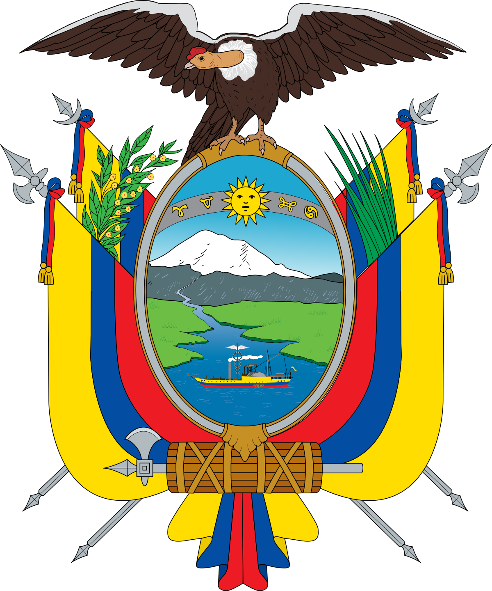
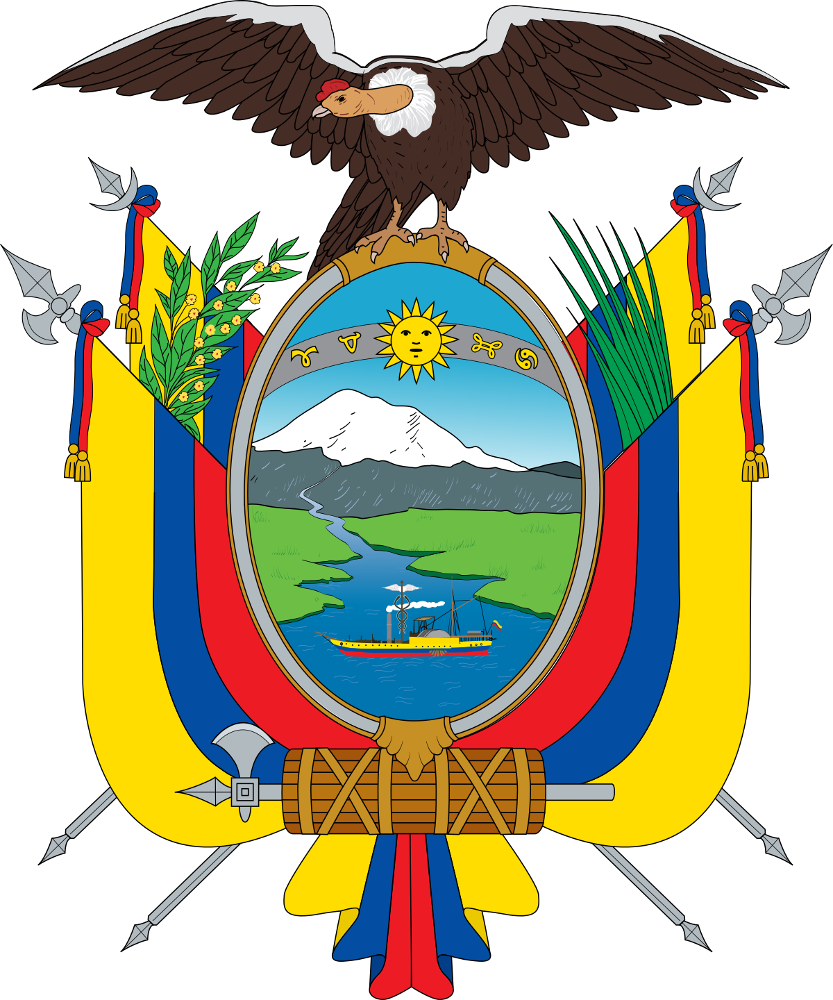
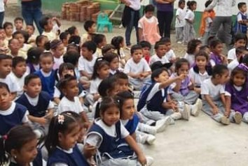
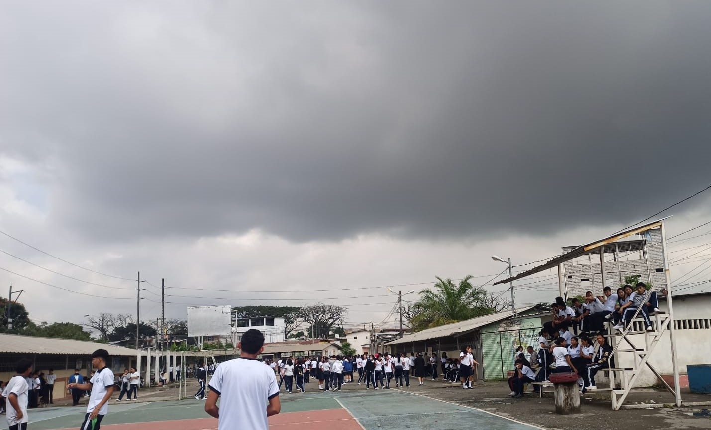

Misión
Formar profesionales técnico bachiller a través de un modelo educativo de calidad flexible y pertinente, vinculando estratégicamente a nuestros alumnos al sector productivo y con la sociedad en general.
REGRESAR AL INDICEVisión
Ser una institución reconocida como líder en educación media superior, capacitación, certificación y servicios tecnológicos, comprometida con el desarrollo económico y social del Estado.
REGRESAR AL INDICEHistoria

La historia del Colegio Fiscal Técnico en Comercio y Administración "Presidente Carlos Julio Arosemena Tola" se remonta a 1969, cuando se iniciaron las gestiones lideradas por la Lcda. Clemencia León Pita, junto con otros miembros de la comunidad, para su creación. Finalmente, en 1980, gracias al presidente Jaime Roldós Aguilera, se logró el acuerdo de creación, publicado en el Registro Oficial bajo el acuerdo ministerial N.º 9716 del 22 de mayo de 1980 con el nombre de “Presidente Carlos Julio Arosemena Tola” como colegio de ciclo básico.
Las labores educativas comenzaron ese mismo año con 105 alumnos y cinco docentes, más personal administrativo. Con el paso de los años, se incorporaron nuevos profesores y se ampliaron las instalaciones del colegio gracias a las gestiones de la comunidad y la dirección del plantel. Se crearon especializaciones en comercio, como contabilidad y secretariado español, lo que requirió la contratación de profesores adicionales.
En 1991, se celebró un hito importante con la inauguración de dos nuevos pabellones de aulas y baterías de servicios higiénicos, lo que permitió mejorar las condiciones educativas para los estudiantes. En el periodo lectivo 1990-1991, el colegio tuvo el orgullo de incorporar su primer grupo de bachillerato, clasificados en las especializaciones de comercio, con destacados logros académicos.
A lo largo de los años, el colegio ha sido un pilar en la comunidad, brindando educación técnica en comercio y administración, y formando a generaciones de jóvenes para enfrentar los desafíos del mundo laboral.
LOGO DEL COLEGIO

Nuestros Estudiantes mediante un video les brindaran un breve conocimiento de nuestra institucion:
REGRESAR AL INDICELa Institucion
En la institucion contamos con:
- Educacion inicial
- Educacion Basica
- Educacion Basica Superior
- Bachillerato
- Secretaria
- Rectorado
- Inspecion
- Laboratorios
- Departamento DECE
A continuacion hablaremos sobre la Educacion inicial, Educacion basica y Bachillerato:
Educacion Inicial
La educación inicial es un período crucial en el desarrollo de los niños, ya que es durante estos primeros años que se establecen las bases fundamentales para su aprendizaje futuro. También es el proceso de socialización de niños y niñas que les permite explorar el mundo en su primera etapa.
En la educación inicial, nos enfocamos en satisfacer las necesidades de los más pequeños. Durante este proceso, se nuevas habilidades, y se forman con disciplina, respeto y solidaridad, valores institucionales las cuales son fundamentales. Nuestros docentes le dan la enseñanza y los ayuda a impulsar las destrezas necesarias para preparar a los niños para la vida.
REGRESAR AL INDICEEducacion Basica
La Educación Básica es el ciclo educativo que se inicia en la primera infancia y finaliza en los últimos años de la adolescencia. En esta sección se especifica los niveles educativos que conforman la Educación Básica. La educación básica proporciona los conocimientos esenciales para el aprendizaje futuro. Durante esta etapa, los estudiantes adquieren habilidades fundamentales en áreas como lectura, escritura, matemáticas, ciencias y estudios sociales, que son necesarias para tener éxito en niveles educativos posteriores y en la vida en general. La institución se centra en cultivar y poner en práctica valores como el respeto, la responsabilidad, la honestidad, la solidaridad y la disciplina. La educación básica no solo se trata de adquirir conocimientos académicos, sino también de promover el desarrollo integral de los estudiantes. Se enfoca en aspectos como el desarrollo cognitivo, emocional, social y físico, preparando a los estudiantes para enfrentar los desafíos del mundo moderno. La educación básica es fundamental para el desarrollo individual y colectivo, proporcionando los conocimientos necesarios para el aprendizaje, el crecimiento personal y la participación activa en la sociedad. La institución se esfuerza por formar a sus alumnos en todas las dimensiones: mente, cuerpo y espíritu, para que estén preparados tanto académica como personalmente para los desafíos futuros.
Educacion Basica Superior
La "Educación Básica Superior" suele referirse a un nivel educativo que se encuentra entre la educación secundaria y la educación superior. En general, la educación básica superior busca proporcionar a los estudiantes habilidades y conocimientos que les preparen para el mundo laboral o para continuar con su educación en niveles superiores. La educación superior desempeña un papel fundamental en el desarrollo integral de los individuos, proporcionándoles una base sólida de conocimientos y habilidades que son esenciales para su crecimiento personal y profesional.
Al proporcionar un ambiente de aprendizaje más avanzado y especializado, la educación superior permite a los estudiantes explorar áreas de interés específicas con mayor profundidad y detalle. Esta educación promueve la comprensión y el dominio de conceptos y teorías abstractas en diversas disciplinas, lo que permite a los estudiantes desarrollar una visión más profunda y sofisticada del mundo que les rodea.
REGRESAR AL INDICEBachillerato
El bachillerato es una etapa crucial en la vida de un estudiante, ya que proporciona la base para su educación superior y su éxito futuro, así como para su desarrollo personal y social. Es un período de crecimiento, exploración y preparación para la vida adulta. Generalmente es un requisito previo para ingresar a la educación superior, ya sea en forma de universidad, colegio comunitario, instituto técnico o cualquier otra forma de educación. Durante el bachillerato, los estudiantes adquieren y desarrollan habilidades fundamentales como pensamiento crítico, resolución de problemas, comunicación efectiva y trabajo en equipo. Esto les permite descubrir sus pasiones, fortalezas y aptitudes, y tomar decisiones informadas sobre su futuro académico y profesional.
También experimentan un importante crecimiento personal y social. Aprenden a ser más independientes, a tomar decisiones por sí mismos y a interactuar de manera efectiva con personas de diferentes orígenes y perspectivas.
En la institución ofrecemos tres bachilleratos altamente competitivos: Un bachillerato técnico en informática, un bachillerato técnico en contabilidad y un bachillerato en ciencias generales. Nuestros alumnos se gradúan preparados para estudiar cualquier carrera universitaria y para integrarse laboralmente en cualquier sector empresarial. Nuestros bachilleres son ciudadanos con valores bien definidos, formados a través de nuestra instrucción formal y del conocimiento académico adquirido a lo largo de su trayectoria estudiantil. Son bachilleres preparados para enfrentar con éxito los desafíos del futuro.
Profesores
Aqui le dejaremos un video de nuestros profesores haciendo deporte:
Autoridades
Abg. CECILIA VELIZ (RECTORA) .
Mr. FREDA CABANILLA (VICERECTORA)